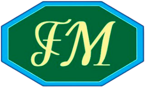
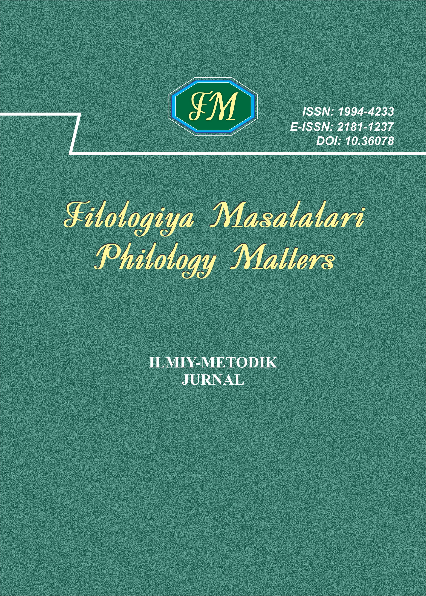

Raqamli muloqotda til va madaniyatning o‘zaro ta’siri
Aziza Karimova · O‘zbekcha · 5–14-betlar


Filologiya va til ta’limining dolzarb masalalariga bag‘ishlangan xalqaro ilmiy-amaliy konferensiya materiallari.
Ushbu maxsus sonda tilshunoslik, adabiyotshunoslik va xorijiy tillarni o‘qitish yo‘nalishlaridagi tadqiqotlar jamlangan. Nashr ilmiy tajriba almashish va yangi yondashuvlarni muhokama qilishga xizmat qiladi.
Konferensiya haqida batafsil ma’lumot, ishtirok etish tartibi va maqolalarni rasmiylashtirish talablari axborot xatida keltirilgan.
Aziza Karimova · O‘zbekcha · 5–14-betlar
Dilshod Rahimov · O‘zbekcha · 15–26-betlar
Madina Ismoilova · O‘zbekcha · 27–36-betlar
Qidiruvga mos maqola topilmadi.